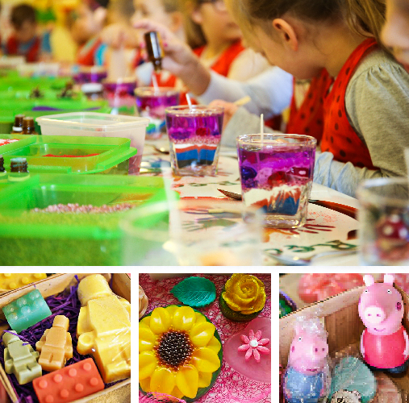

Warsztaty artystyczne
Mamy w swojej ofercie również warsztaty artystyczne dla dzieci i dorosłych!
Możesz nauczyć się robic piękne mydła glicerynowe, nauczysz się malować, robić magnesy na lodówkę, szydełkować, i uwaga…! Możesz nauczyć się tego wszystkiego po angielsku, albo po polsku bądź po rosyjsku!
Przykładowe warsztaty:
Warsztaty mydlarskie.
Dzieci tworzą własnoręcznie mydełka glicerynowe. Komponują własny zapach, kolor, wybierają foremkę. Mydełka są wzbogacane olejkami, ziołami, brokatem itd. Warsztatom towarzyszy treść edukacyjna. Dlaczego mydło myje? Czy mydło zabija zarazki? Kto wymyślił mydło? Czy potrafisz zgadnąć zapach? Jaki kolor uzyskasz, jeśli wymieszasz np. czerwony i zielony? W przypadku warsztatów w Sali Klubu- prezentacja z rzutnika i krótki film o tym, dlaczego rączki powinny być czyste. Po zastygnięciu mydełek samodzielnie pakujemy według własnej inwencji, z materiałów Klubu. Mydełka zabieramy do domu. Wiek - powyżej 3 lat. Czas trwania 90 min. Cena - 15 zł/dziecko.Przykładowe mydełka, robione przez dzieci:
Warsztaty świecowe.
Tworzymy świece żelowe lub woskowe. Warsztaty absolutnie bezpieczne. Wybieramy kształt, kolor świecy i zapach. Część edukacyjna- jak jest ciemno, co daje światło? A co robić, jeśli nie mamy żarówki? Co jest źródłem światła? Dlaczego musimy uważać na kuchni? Po zrobieniu świecy samodzielnie pakujemy w ozdobne pudełka według własnej inwencji i zabieramy do domu. Czas 60min. Cena 12 zł/dziecko.Warsztaty Włóczykija.
Warsztaty poświęcone kraju lub regionu (np. Hiszpania, Śląsk, USA etc.) Pokazy zdjęć, puszczanie nagrań piosenek z kraju. Poznajemy muzykę, tańce, kuchnie, sztukę danego miejsca. Część artystyczna- wracamy z tego kraju do swojego domu i zabieramy z tego kraju pamiątkę, którą tworzymy sami. Np. lalka motanka z Rosji, pudełko na herbatę z motywem Union Jack z Wielkiej Brytanii, bransoletka drewniana z Nigerii, kartka ze słonecznej Florydy i inne. Dziecko uczy się tolerancji, poznaje nową kulturę. Zrobioną pamiątkę zabieramy do domu i dajemy rodzicom w prezencie, jako pamiątkę z podróży. Czas 90 minut. 15 zł/dziecko.Malowanie toreb.
Bawełniana torba + pastele do malowania tkanin. Część edukacyjna- jak zabrać ze sobą skarby? Co mamy noszą w torebkach? W czym tata nosi klucze? Po co kangur ma torbę? W czym noszę swoje skarby? Co pakuję do torby/walizki na wakacje/do przedszkola/do kina?Malujemy torby według własnej inwencji (pod kontrolą trenera) i zabieramy do domu.
Czas 60 minut. Cena 15 zł
Warsztaty okolicznościowe.
Na chwilę obecną pracujemy nad scenariuszem dla warsztatów z robienia bombek choinkowych (Kula akrylowa, środek której wypełniamy sizalem, koralikami, cekinami etc.), zawieszana na choince na tasiemce brokatowej. Część edukacyjna- święta Bożego Narodzenia. Czas 60 minut. Cena - 15 zł.Na życzenie
Warsztaty 90 minutowe mogą mieć przerwę na posiłek - dodatkowe 15 minut. Współpracujemy z firmą cateringową, oferującą smaczne i zdrowe przekąski dla dzieci.
Więcej warsztatów w opracowaniu.
Na warsztatach obecne 2 osoby- trener oraz asystent trenera.
Minimum dzieci w grupie - 8.
Ceny podane dla warsztatów w języku polskim oraz rosyjskim.
Zapraszamy grupy szkolne przedszkolne, firmy, rodziny do uczestnictwa w kolorowych,radosnych i kreatywnych warsztatach.